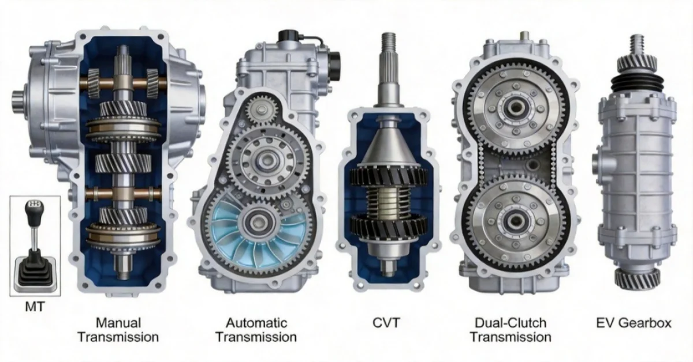

Understanding Automotive Transmissions: A Beginner's Guide
Why does your car need a transmission?
Because your engine (or motor) spins at a speed that is way too fast for the wheels
to handle directly. The transmission's job is simple: reduce the rotational speed
from the engine and multiply the torque delivered to the wheels. Think of it like
riding a bicycle — you shift gears to make pedaling easier uphill and faster on flat
roads. A car transmission does the same thing, just with metal gears instead of
chains.
This guide walks through the five major transmission types you will
encounter today, how each one works, and what has changed in the electric vehicle
era.

1. Manual Transmission (MT)
How it works: The driver operates a clutch pedal to disconnect the engine from the gearbox, then manually moves a gear lever to select different gear ratios. Inside, pairs of gears on parallel shafts mesh at different ratios. A synchronizer matches gear speeds before engagement to prevent grinding.
Strengths:- Highest mechanical efficiency (up to 95%+), minimal power loss
- Simple and durable, low maintenance cost
- Full driver control over gear selection
- Requires skill and physical effort in traffic
- Being phased out of mass-market vehicles due to convenience demand
Common in: entry-level cars, performance-oriented vehicles, commercial trucks in developing markets
2. Automatic Transmission (AT)
How it works: AT uses a torque converter — a fluid coupling filled with
transmission
oil — to transfer power from the engine to a planetary gear set. The torque
converter acts like two fans facing each other: the engine spins one impeller,
which
pushes oil to spin the other, transmitting power without a hard mechanical
connection. The planetary gear set then provides multiple gear ratios, shifted
automatically by hydraulic valves controlled by the transmission computer.
A lock-up clutch engages at cruising speeds to mechanically connect the engine
and
transmission, eliminating the 8-10% energy loss from the fluid coupling.
- Smoothest operation, minimal vibration
- Extremely durable, handles high torque loads
- Mature technology with well-established repair networks
- Complex and expensive to manufacture
- Slightly lower efficiency than manual or DCT
- Heavier and larger than other types
Common in: luxury vehicles, SUVs, heavy-duty trucks, vehicles in North America and Japan
3. Continuously Variable Transmission (CVT)
How it works: Instead of fixed gear ratios, CVT uses two cone-shaped pulleys connected by a steel belt or chain. By hydraulically adjusting the gap between the pulley halves, the belt rides at different effective diameters, creating an infinite range of ratios. There are no discrete "gears" — the ratio changes continuously.
Strengths:- Perfectly smooth acceleration with zero shift shock
- Keeps engine at optimal RPM for fuel efficiency
- Compact and lightweight
- Cannot handle high torque, steel belt may slip under hard acceleration
- "Rubber band" feel — engine note rises without corresponding speed increase
- Repair often requires full unit replacement, expensive
Common in: small-displacement economy cars, Japanese family cars (Honda, Nissan, Subaru)
4. Dual-Clutch Transmission (DCT)
How it works: DCT is essentially two manual transmissions packed into one unit.
Typically, two clutches handle odd gears (1, 3, 5, 7) and even gears (2, 4, 6)
separately, with reverse gear assignment varying by manufacturer. While one gear
is
engaged and transmitting power, the next gear is already pre-selected. Shifting
only
requires switching from one clutch to the other — taking milliseconds.
DCT comes in two variants:
— Dry clutch: lighter, more efficient, but prone to overheating in traffic
— Wet clutch: oil-cooled, handles higher torque, more durable but slightly
heavier
- Fastest shift speed of all transmission types
- Near-manual efficiency, minimal power loss
- Sporty, engaging driving feel
- Jerky at low speeds, especially in stop-and-go traffic
- Higher failure rate than AT and CVT
- Complex repairs, costly maintenance
Common in: performance cars, European vehicles (VW DSG, Audi S-Tronic, Porsche PDK)
5. EV Transmissions: Single-Speed and Beyond
How it works: Electric motors produce maximum torque from zero RPM and maintain high
efficiency across a very wide speed range (typically 2,000 to 15,000 RPM). This
means most EVs do not need multiple gears at all. A single-speed reduction gearbox —
typically with a ratio of 8:1 to 10:1 — reduces the motor's high RPM to a practical
wheel speed.
For example, a Tesla Model 3 uses a 9:1 ratio: the motor can spin up to 15,000+ RPM,
and the gearbox reduces it to about 1,700 RPM at the wheels for highway speeds.
Some high-performance EVs use a two-speed transmission. The Porsche Taycan uses a
short first gear for explosive launch acceleration and a taller second gear for
efficient high-speed cruising. Hyundai's 2-Stage Motor System, found in the IONIQ 5
N, applies a similar concept.
Single-speed pros: simple, light, reliable, nearly zero maintenance
Single-speed cons: slight efficiency compromise at very high speeds
Two-speed pros: better acceleration and highway efficiency
Two-speed cons: added complexity, weight, and cost
MT: Most efficient, most engaging, fading from market
AT: Most durable, smoothest comfort, highest cost
CVT: Smoothest acceleration, most fuel-efficient, limited torque capacity
DCT: Fastest shifting, sporty feel, complex maintenance
EV single-speed: Simplest, most reliable, covers most driving needs
EV two-speed: Best of both worlds for performance, higher cost
Which Transmission Is Right for You?
— Daily commuting and comfort: AT or CVT
— Fuel economy on a budget: CVT
— Performance and driving enjoyment: DCT or MT
— Electric vehicle: single-speed is more than enough for 95% of drivers
— High-performance EV: two-speed (Porsche Taycan, Hyundai IONIQ 5 N)
The automotive world is shifting. Manual transmissions are becoming niche, AT is retreating to premium segments, CVT and DCT dominate mass-market cars, and EVs are rewriting the rules entirely. But understanding how these systems work helps you make smarter decisions — whether buying a car, specifying components, or just appreciating the engineering under your feet.
Got questions about transmissions for your application? Feel free to connect and discuss.